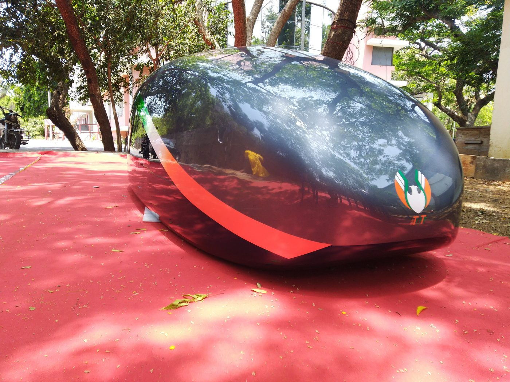
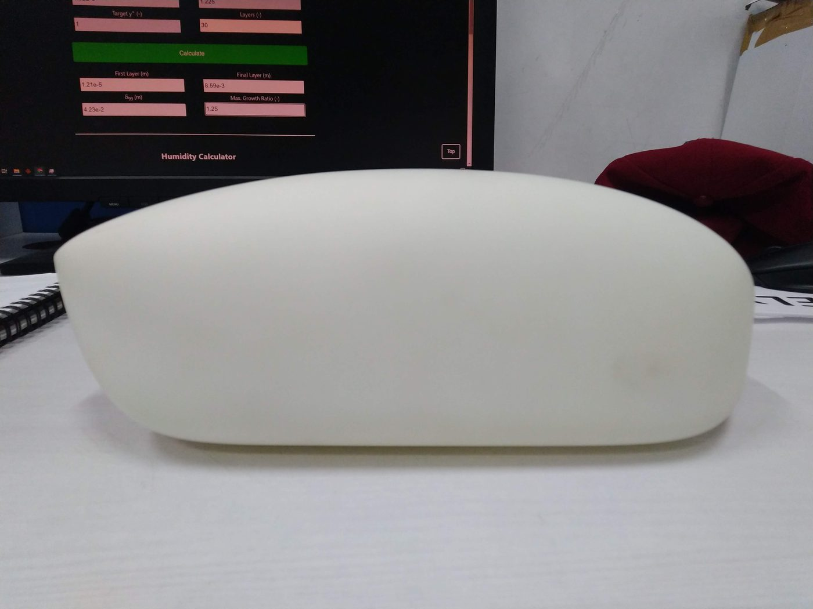
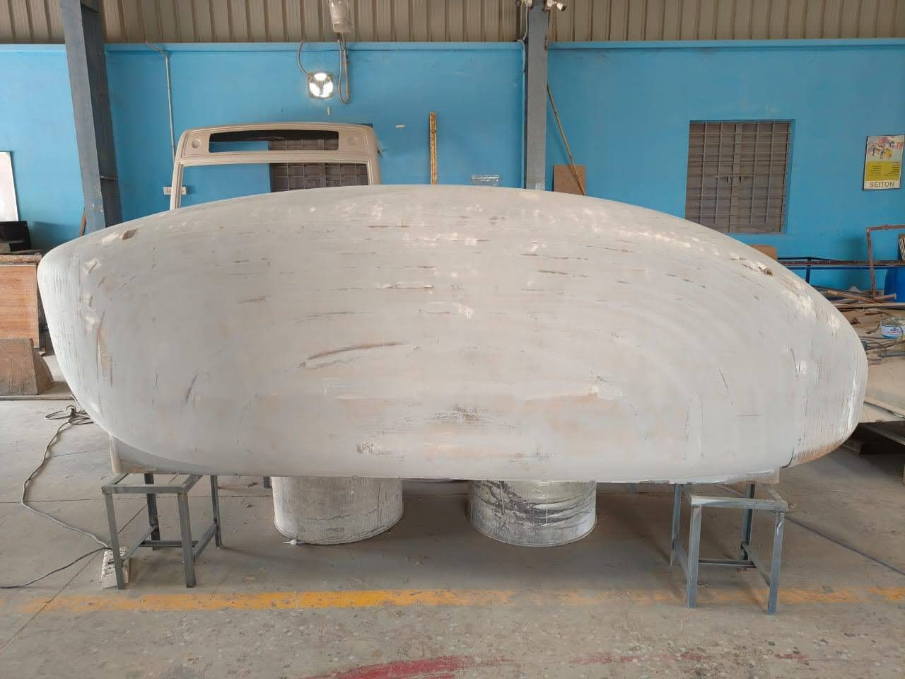
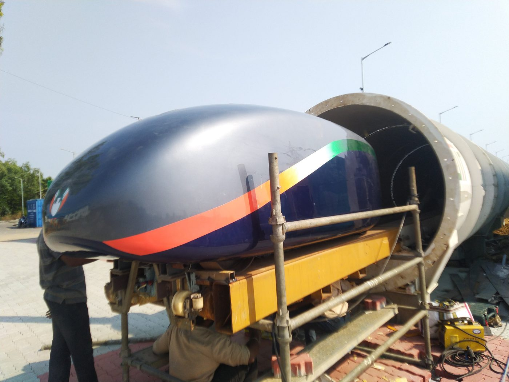
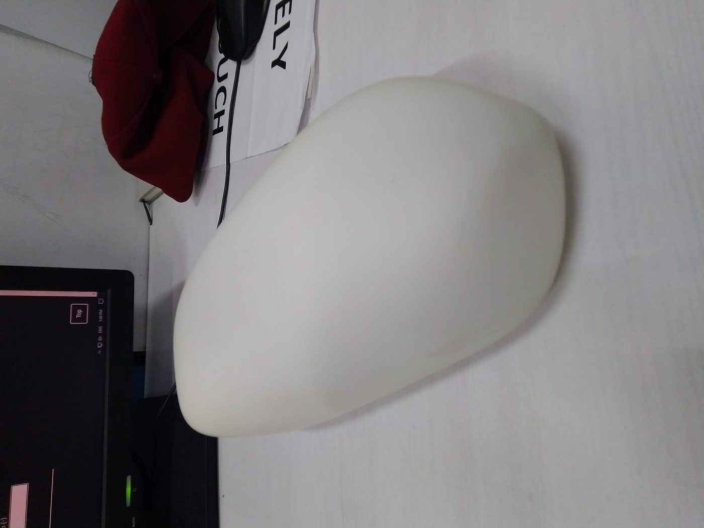
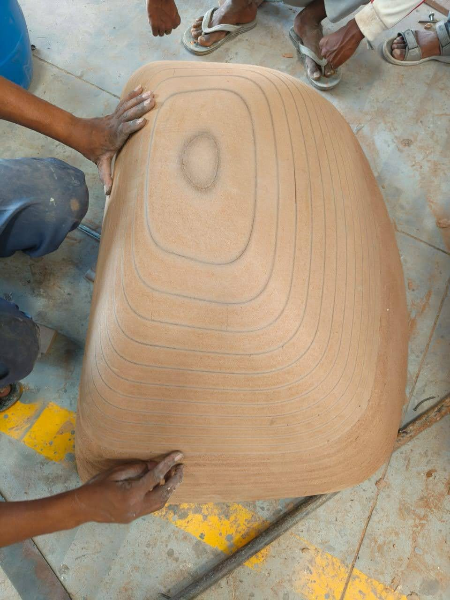
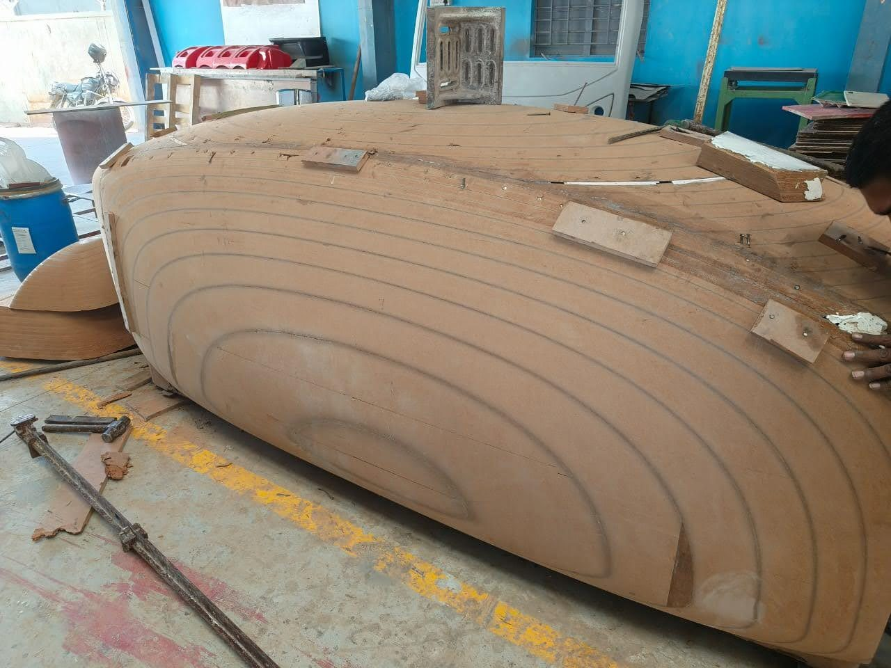
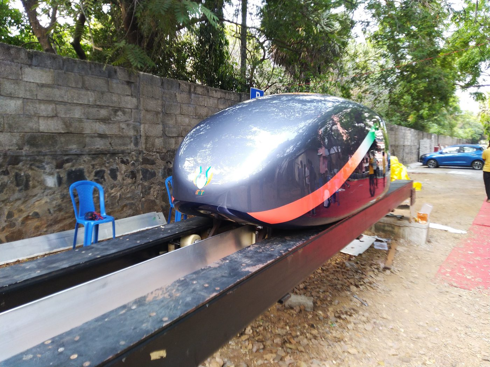
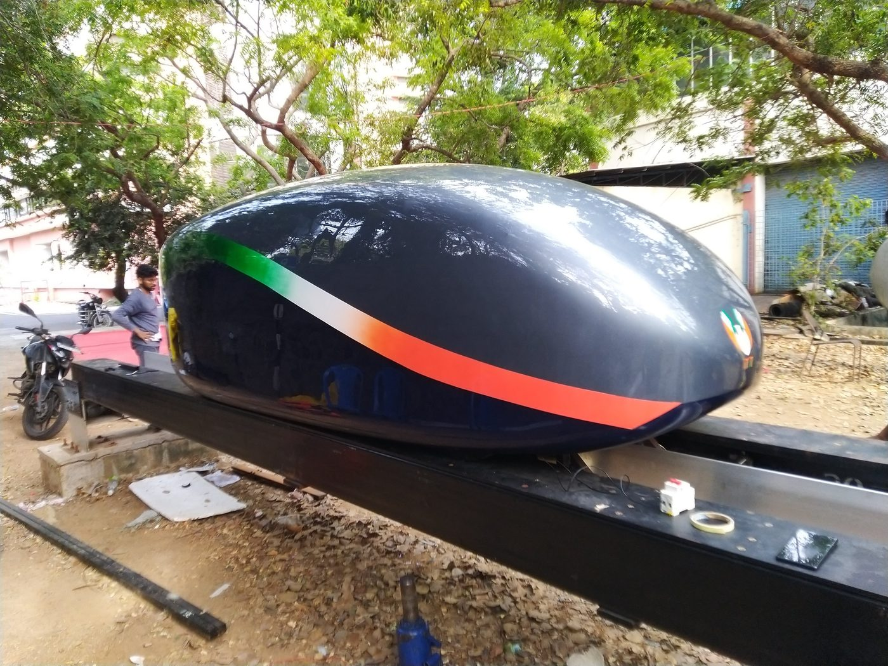
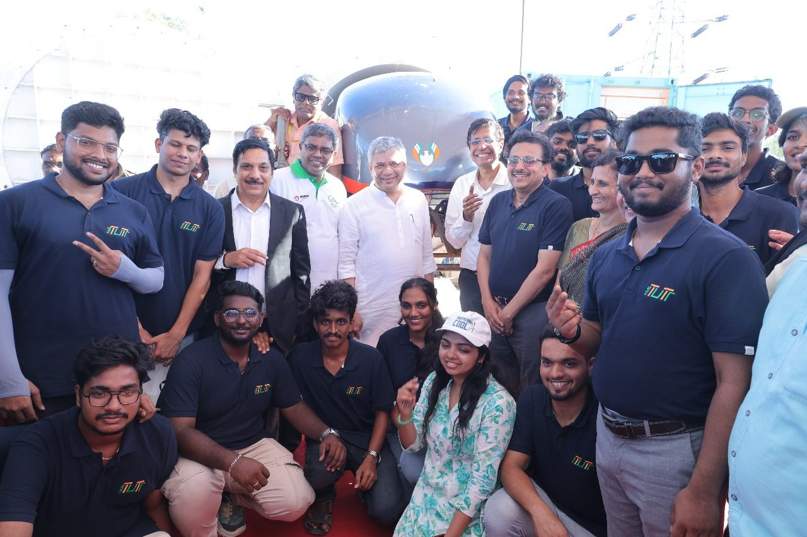

Back to Projects
Hyperloop Top Hat
End-to-end development of Tutr Hyperloop's first composite aerodynamic body — from CFD-optimized design through composite manufacturing to minister-level showcase.
End-to-end development of Tutr Hyperloop's first composite aerodynamic body — from CFD-optimized design through composite manufacturing to minister-level showcase.
I took over this ₹20 lakh program as CFD Engineer after a managerial transition, with the aerodynamic body design incomplete and manufacturing timelines at risk. Rather than hand off to another team, I assumed end-to-end ownership — from aerodynamic optimization through composite manufacturing, vendor coordination, and final integration.
The objective was to design and build a lightweight, aerodynamically efficient composite body for Tutr Hyperloop's pod — the first of its kind at the organization. The body needed to minimize drag at high speeds, withstand operational loads, and be manufacturable within budget and schedule constraints.
The program culminated in a successful minister-level technology showcase to the Hon'ble Indian Railway Minister in March 2025 — validating the complete engineering workflow from simulation to deployment.

I designed the 3.0 m × 1.1 m × 1.1 m composite aerodynamic body in SOLIDWORKS, balancing four competing constraints: aerodynamic performance, manufacturability, structural integrity, and weight.
The external aerodynamic profile was optimized through 20+ CFD iterations in ANSYS Fluent using the k-ω SST turbulence model. I evaluated the design across 15+ operating conditions including varying speeds, yaw angles, and ground clearances to ensure robust performance.
Before committing to the full-scale design, I validated the complete simulation workflow against a Tesla Model S benchmark — confirming methodology accuracy and building confidence in the predicted drag coefficient of Cd ≈ 0.25.


I developed a complete MDF master pattern and mould fabrication workflow to enable repeatable composite manufacturing. The pattern was CNC-machined to precise tolerances, then used to create production moulds for glass fiber hand lay-up.
I directed the glass fiber hand lay-up process with optimized laminate orientations — combining unidirectional (UD) and bidirectional (BD) fabrics at 0°/45°/90° angles to achieve the required stiffness-to-weight ratio. The production assembly weighed 60 kg, meeting the aggressive lightweight target.
Quality control included dimensional verification, surface finish inspection, and structural integrity checks at each stage of the lay-up process.
I coordinated 5+ external vendors across machining, mould manufacturing, composite fabrication, painting, transportation, and final integration — each with different lead times, quality standards, and technical requirements.
The integration phase required precise alignment of the composite body with the pod's structural frame, ensuring load paths were maintained and no interference existed with subsystems including the LIM, battery pack, and control electronics.
Final fit-check and assembly were completed inside the 8.6 m vacuum test facility, with the Top Hat mounted and verified for operational clearance.






The Top Hat was successfully delivered as Tutr Hyperloop's first operational aerodynamic body after approximately 10 months of development. The system remains in active service and was showcased during the visit of the Hon'ble Indian Railway Minister in March 2025.
This public demonstration validated the complete engineering workflow — from CFD-optimized design to composite manufacturing to vehicle integration — and established a repeatable process for future aerodynamic body development at Tutr Hyperloop.
